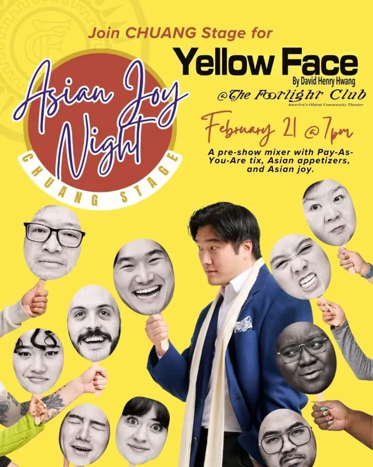

let’s go do a thing!
PLAY PREMISE: Based on the true story of David Henry Hwang and set against the backdrop of his reaction to the casting of actor Jonathan Pryce as a Eurasian character in the Broadway musical Miss Saigon in 1990, this semi-autobiographical self-mocking drama examines the idea of casting shows in accordance with race/ethnicity while also examining family dynamics, immigrant status, and cultural misappropriation.

what?
Come for a pre-show mixer to enjoy some light appetizers from local Asian restaurants and to meet other members of the AAPI community in the Parker Room. Asian Joy Night is an opportunity to support efforts to break down barriers of access and entry for the AAPI community to reach Boston theater.
where? when?
7A Eliot Street in Jamaica Plain
Friday, February 21 at 7 PM
additional info
- Pay-As-You-Are (minimum $0)
- More info and buy tix: